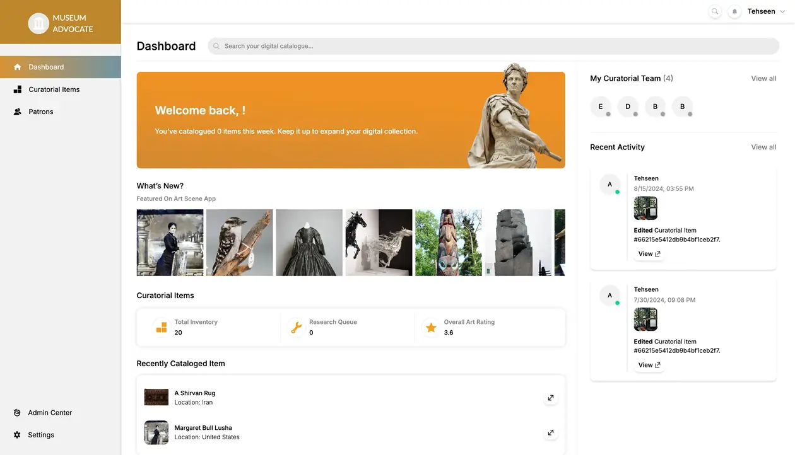
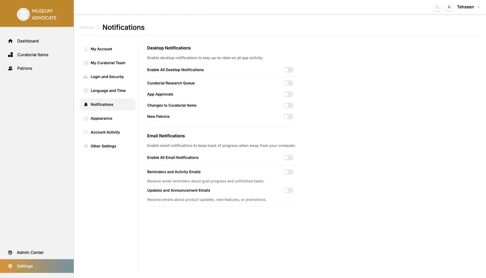
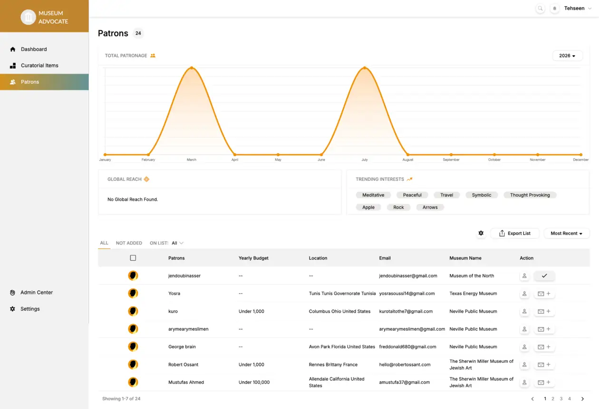
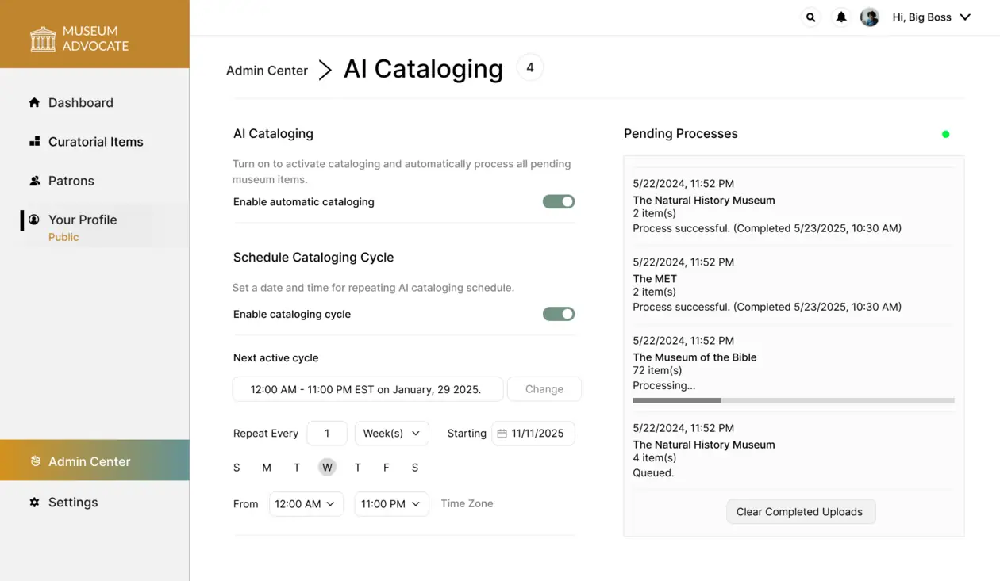
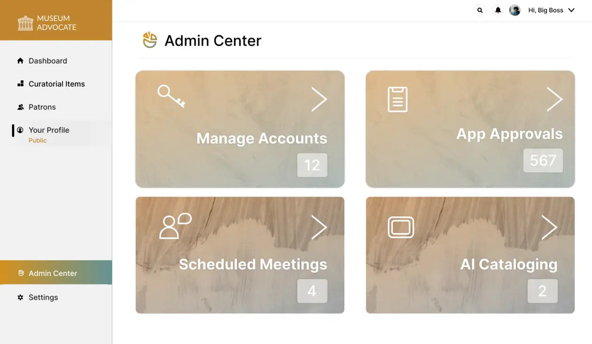

01 / Museum Advocate
Evolving an inherited art app into a museum-owned platform.
An Airtable/Firebase-backed mobile app became a three-product ecosystem: Museum Advocate for museums, ArtScene for public discovery, and AI Cataloging for mobile artwork capture.
Read the full Museum Advocate case study- Problem
- The client team was still acting as the data-entry layer for museums, maintaining catalog data manually.
- Owned
- Solution architecture, API/data model direction, team delivery, migration work, integrations, deployment, and support.
- Outcome
- Museums could manage first-party collection data while the mobile apps moved onto a shared platform layer.





System notes
Starting pointAirtable/Firebase-backed mobile app
ShiftMuseums manage first-party collection data
ResultThree products connected through one platform layer
Engineering decisions
- Starting point
- The product began with Airtable and Firebase dependencies, so the work had to evolve an inherited system rather than start from a blank slate.
- Data ownership
- The platform shifted catalog management toward museums, reducing the need for the client team to remain the manual data-entry layer.
- Platform shape
- A museum dashboard, public discovery app, and AI Cataloging mobile app were connected through one shared product ecosystem.
System shape
Shared platformMuseum teams manage collection data through a shared API and data layer.
Shared API + data layer
Node.js / Express · MongoDB · Firebase Storage · JWT · role-based access
Connected product surfaces
Museum Advocate Dashboard
Art Scene Mobile
AI Cataloging Mobile
- 8,000additional users reported by the client
- 5K+Google Play installs for Art Scene
- 3 appsdashboard, consumer app, and AI Cataloging connected through one ecosystem